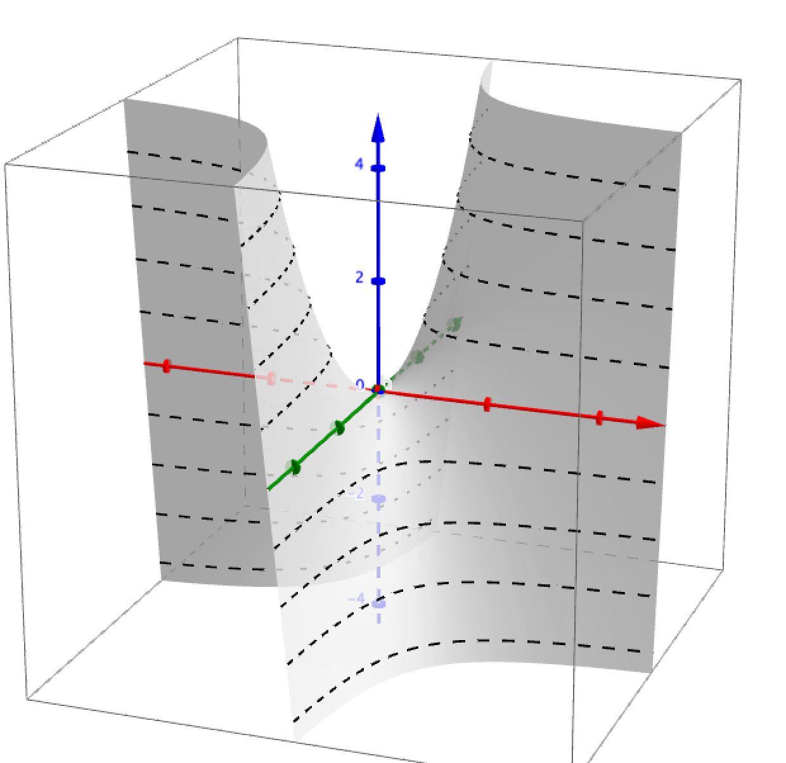
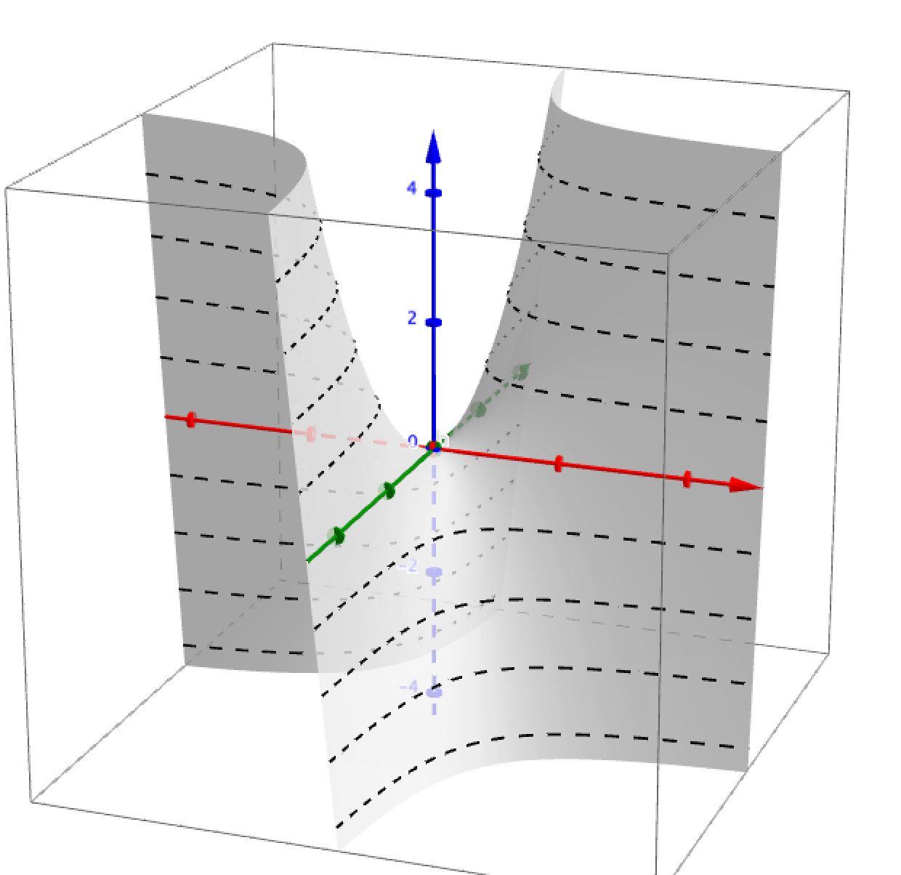

Visualizing Complex Functions
Enhanced phase portraits
Complex functions
\[\begin{aligned} f: \mathbb C \rightarrow \mathbb C \end{aligned} \]live in a 4-dimensional space
Methods to visualize complex functions
- Real and Imaginary components
- Analytic landscapes
- Mappings
- Domain coloring
Real and Imaginary components
\[f(z)= \text{Re}(x,y) + i\, \text{Im}(x,y)\]
\[\begin{aligned}
f(z) & = z^2
\end{aligned} \]

 

The probability of getting \(k\) heads when flipping \(n\) coins is
\[P(E) = {n \choose k} p^k (1-p)^{ n-k} \]An Identity of Ramanujan
\[ \frac{1}{\Bigl(\sqrt{\phi \sqrt{5}}-\phi\Bigr) e^{\frac25 \pi}} = 1+\frac{e^{-2\pi}} {1+\frac{e^{-4\pi}} {1+\frac{e^{-6\pi}} {1+\frac{e^{-8\pi}} {1+\ldots} } } } \]A Rogers-Ramanujan Identity
\[ 1 + \frac{q^2}{(1-q)}+\frac{q^6}{(1-q)(1-q^2)}+\cdots = \prod_{j=0}^{\infty}\frac{1}{(1-q^{5j+2})(1-q^{5j+3})}\]Maxwell’s Equations
\[ \begin{aligned} \nabla \times \vec{\mathbf{B}} -\, \frac1c\, \frac{\partial\vec{\mathbf{E}}}{\partial t} & = \frac{4\pi}{c}\vec{\mathbf{j}} \\ \nabla \cdot \vec{\mathbf{E}} & = 4 \pi \rho \\ \nabla \times \vec{\mathbf{E}}\, +\, \frac1c\, \frac{\partial\vec{\mathbf{B}}}{\partial t} & = \vec{\mathbf{0}} \\ \nabla \cdot \vec{\mathbf{B}} & = 0 \end{aligned} \]TeX Macros
Here is a common vector space: \[L^2(\R) = \set{u : \R \to \R}{\int_\R |u|^2 < +\infty}\] used in functional analysis.The Lorenz Equations
\[\begin{aligned}
\dot{x} & = \sigma(y-x) \\
\dot{y} & = \rho x - y - xz \\
\dot{z} & = -\beta z + xy
\end{aligned} \]
The Cauchy-Schwarz Inequality
\[ \left( \sum_{k=1}^n a_k b_k \right)^2 \leq \left( \sum_{k=1}^n a_k^2 \right) \left( \sum_{k=1}^n b_k^2 \right) \]
A Cross Product Formula
\[\mathbf{V}_1 \times \mathbf{V}_2 = \begin{vmatrix}
\mathbf{i} & \mathbf{j} & \mathbf{k} \\
\frac{\partial X}{\partial u} & \frac{\partial Y}{\partial u} & 0 \\
\frac{\partial X}{\partial v} & \frac{\partial Y}{\partial v} & 0
\end{vmatrix} \]
The probability of getting \(k\) heads when flipping \(n\) coins is
\[P(E) = {n \choose k} p^k (1-p)^{ n-k} \]
An Identity of Ramanujan
\[ \frac{1}{\Bigl(\sqrt{\phi \sqrt{5}}-\phi\Bigr) e^{\frac25 \pi}} =
1+\frac{e^{-2\pi}} {1+\frac{e^{-4\pi}} {1+\frac{e^{-6\pi}}
{1+\frac{e^{-8\pi}} {1+\ldots} } } } \]
A Rogers-Ramanujan Identity
\[ 1 + \frac{q^2}{(1-q)}+\frac{q^6}{(1-q)(1-q^2)}+\cdots =
\prod_{j=0}^{\infty}\frac{1}{(1-q^{5j+2})(1-q^{5j+3})}\]
Maxwell’s Equations
\[ \begin{aligned}
\nabla \times \vec{\mathbf{B}} -\, \frac1c\, \frac{\partial\vec{\mathbf{E}}}{\partial t} & = \frac{4\pi}{c}\vec{\mathbf{j}} \\ \nabla \cdot \vec{\mathbf{E}} & = 4 \pi \rho \\
\nabla \times \vec{\mathbf{E}}\, +\, \frac1c\, \frac{\partial\vec{\mathbf{B}}}{\partial t} & = \vec{\mathbf{0}} \\
\nabla \cdot \vec{\mathbf{B}} & = 0 \end{aligned}
\]